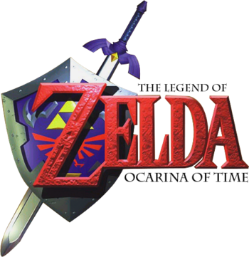
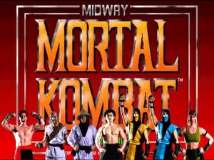

Super Mario Bros. es un videojuego de plataformas y aventuras, diseñado por Shigeru Miyamoto,
lanzado el 13 de septiembre de 1985 y producido por la compañía Nintendo para Nintendo Entertainment System
El juego describe las aventuras de dos fontaneros, Mario y Luigi, quienes deben rescatar a la Princesa Peach,
quién fue secuestrada por el rey de los Koopas, Bowser y salvar al Reino Champiñón de este mismo. A través de ocho
diferentes niveles de juego, los jugadores pueden controlar a uno de los dos hermanos y deben enfrentarse finalmente a cada
uno de los enemigos de cada castillo para liberar a la Princesa Peach.
The Legend of Zelda: Ocarina of Time

The Legend of Zelda: Ocarina of Time es la quinta entrega de saga The Legend of Zelda, desarrollado por Nintendo
Entertainment Analysis and Development, coodesarrollado por Grezzo, y publicado por Nintendo para la Nintendo 64.
El primer juego con gráficos 3D de la serie, el motor básico y modo de juego se utilizaron posteriormente en futuras
entregas, incluyendo su secuela, The Legend of Zelda: Majora's Mask. El juego comenzó una tradición en la saga de Zelda,
un elemento importante o persona del juego aparece en el título del juego.
El juego se desarrolla en el reino de Hyrule. Un joven llamado Link se embarca en una búsqueda para evitar que el malvado
Ganondorf, el antagonista principal de saga de Zelda, obtenga la legendaria Trifuerza, una reliquia mágica de poder
omnipotente, un evento predicho por la profecía Princesa Zelda. Debido a las circunstancias imprevistas, Ganondorf obtiene
con éxito parte de la Trifuerza. Al viajar adelante y atrás en el tiempo utilizando la mítica Espada Maestra, Link debe
reunir los seis medallones necesarios para derrotar a Ganondorf y restaurar la paz a Hyrule.
Mortal Kombat

Mortal Kombat es el primer juego de la saga y primera entrega. Fue lanzado el 8 de octubre de 1992 de manos de Midway Games
para la consola Arcade. El juego presentaba la novedad de que los personajes eran digitalizados interpretados por actores
reales (que le daban gran realismo y atractivo al juego), gráficas de escenarios averiados y sonidos de trituración de huesos,
que sumergieron a todos los jugadores dentro de su ambiente. El estilo de juego hizo disfrutar a los principiantes y a los que
ya tenían más experiencia en el ámbito.
Presentó una jugabilidad de 5 botones: dos para los puños y dos para las patadas (ambos altos y bajos), y el esencial botón de bloqueo,
para cubrirse. El bloqueo era una novedad, pues juegos del género usaban un sistema que involucraba los controles de movimiento para
bloquear (dirigiendo la palanca hacia atrás del personaje), dificultando los contraataques. En Mortal Kombat, manteniendo atrás la
palanca se podía mover al personaje haciéndolo alejarse del rival, pero aún en esa posición se podía contraatacar. De este modo, se
creó una división entre los videojugadores: los experimentados en el sistema de MK y los adaptados al sistema de Street Fighter
(bloquear con la palanca de movimiento).